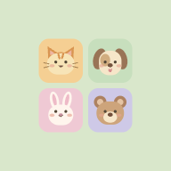

동물친구 블록놀이터
홈 화면에 두고, 아이콘을 눌러 놀아요.
오프라인 실행을 준비하고 있어요.
▶ 게임 열기아이폰 · 아이패드
- 이 주소를 Safari에서 열어요.
- 공유 → 홈 화면에 추가를 선택해요.
- ‘웹 앱으로 열기’가 보이면 켜고, 추가를 눌러요.
안드로이드
- 이 주소를 Chrome에서 열어요.
- 위의 설치 버튼이나 ⋮ 메뉴 → 홈 화면에 추가 → 설치를 선택해요.
‘오프라인 준비 완료’가 표시되면 홈 화면 아이콘으로 실행해 보세요. 처음 준비할 때와 업데이트할 때는 인터넷이 필요해요. 브라우저 데이터를 지웠다면 다시 온라인으로 열어 주세요.